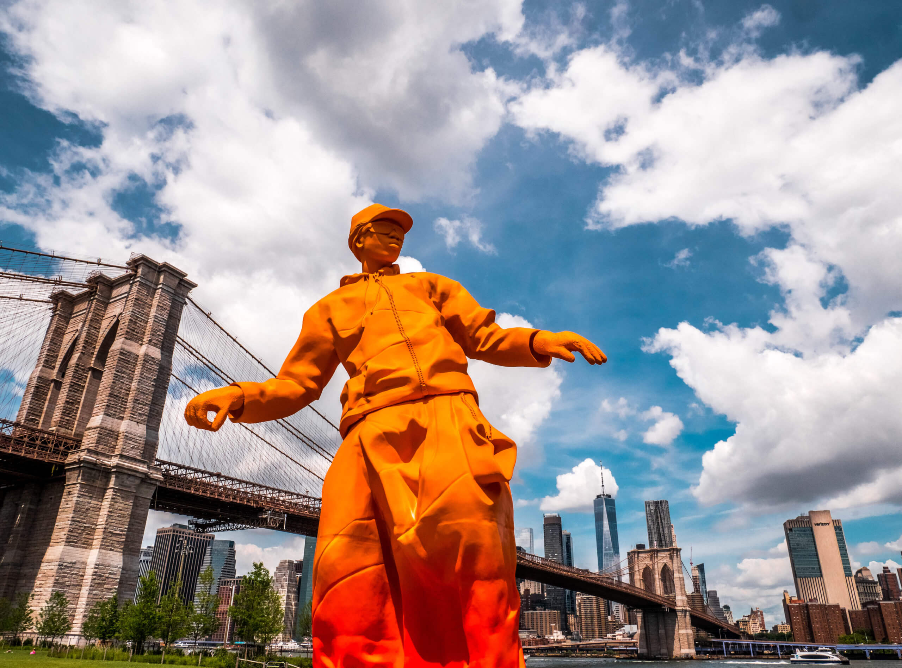

Visiter Brooklyn par ou commencer ?
Visiter Brooklyn fait partie des endroits étonnants à découvrir lors de ton voyage à New York ! Cet arrondissement est idéal pour les voyageurs qui cherchent à explorer un quartier historique, hypercontemporain et bien dans son jus.
Une facette de New York à ne pas négliger et dont on raffole ! Brooklyn c’est aussi le lieu où prendre les meilleures photos de la Skyline new-yorkaise et explorer la scène Street art.
Avec Pierre, on voyage à New York depuis 2001 et on a pu voir le borough évoluer radicalement !
Finie l’époque où visiter Brooklyn se résumait au Brooklyn Bridge et à Coney Island. Maintenant, le quartier mériterait un city trip de plusieurs jours à lui seul.
Et maintenant je vais vous emmener dans un endroit absolument génial ! Sur l'eau avec une vue imprenable sur les grands buildings de manhattan au pied du Brooklyn bridge .
Le Pier Z Roller Rink, un aménagement sur les berges avec des terrains de sport et une immense piste de roller. Aussi bien pour les enfants que pour les adultes cette structure est parfaite pour une sortie fun, vous pourrez même réserver pour des soirées à thèmes qui sont régulièrement organisées.
Le prix est adorable, ils proposent la location des rollers ou bien vous pouvez venir avec les vôtres.
Je vous partage le lien de leur site dans le petit logo ci-contre
Luke est un américain né dans le Maine (état situé à l'extrême nord-est des États-Unis).
Son père étant Lobster Man, c'est à dire qu'il élève et pêche le homard, Luke l'aide alors depuis tout petit. Immédiatement, dans ce quartier hyper sympa et hétéroclite, le concept a marché du tonnerre.
Que peut-on manger chez Luke’s Lobster ?
Alors oui la tête de gondole de Luke’s Lobster est le homard, mais on ne mange pas que cela.
Il y a aussi d’autres crustacés comme le crabe et la crevette.
Ainsi, on peut y manger des petits sandwichs tel que :
– des hot dogs de crevettes, de crabe ou de homard
– pinces de homard
– petits paquets de chips en accompagnement
le tout accompagné de sa petites sauces cocktails

Coney Island est une ancienne île devenue péninsule située à l'extrême sud de l'arrondissement de Brooklyn, dans la ville de New York.
L'île a été reliée à la cité après la guerre de Sécession (1861-1865) par une ligne de chemin de fer et de tramway.
Longue de 6,5 kilomètres pour moins d'un de large, elle a depuis lors conservé sa célèbre plage donnant sur l'océan Atlantique.
L'île comprend les quartiers de Gravesend au nord, Sea Gate à l'ouest, Brighton Beach et Manhattan Beach à l'est.
Le site était anciennement un complexe de loisirs majeur et abritait plusieurs parcs d'attractions.
Atteignant le sommet de sa popularité au début du xxe siècle, et amorçant son déclin après la Seconde Guerre mondiale, le site a été revitalisé par les immigrants russes et l'ouverture de KeySpan Park, terrain où joue le club de baseball des Cyclones de Brooklyn évoluant en ligue mineure New York-Penn.
Un parc d'attractions, le « nouveau Luna Park », a ouvert ses portes en mai 2010.
Il marque le début d'une campagne de revitalisation du quartier des attractions.
En parallèle, un plan de développement immobilier menace de destruction certains bâtiments avoisinants, datant de la fin du xixe siècle et du début du xxe siècle.
Des associations et des historiens réclament le classement du quartier en patrimoine historique1.

- Marcher sur le Brooklyn Bridge
- Photographier le Manhattan Bridge depuis DUMBO
- Admirer la Skyline à l’Esplanade de Fulton Ferry
- Se balader sur la promenade de Brooklyn Heights
- S’immerger dans Brooklyn Heights pour voir les brownstones
- Découvrir le nouveau lieu en essor, le Pier 6
- Se balader dans le nouveau quartier alternatif de Williamsburg
- Photographier le street art de Bushwick
- S’amuser à Coney Island
Liste des choses à faire
Tableau de la population
| Caractéristiques | Année | Population | |
|---|---|---|---|
| 1 | % de francais | 2022 | 10% |
| 2 | Population dominante | 2022 | Multiculturel |
| 3 | Hause durant les 10 dernieres années | 2013/2023 | 2 224 950/2 367 551 |